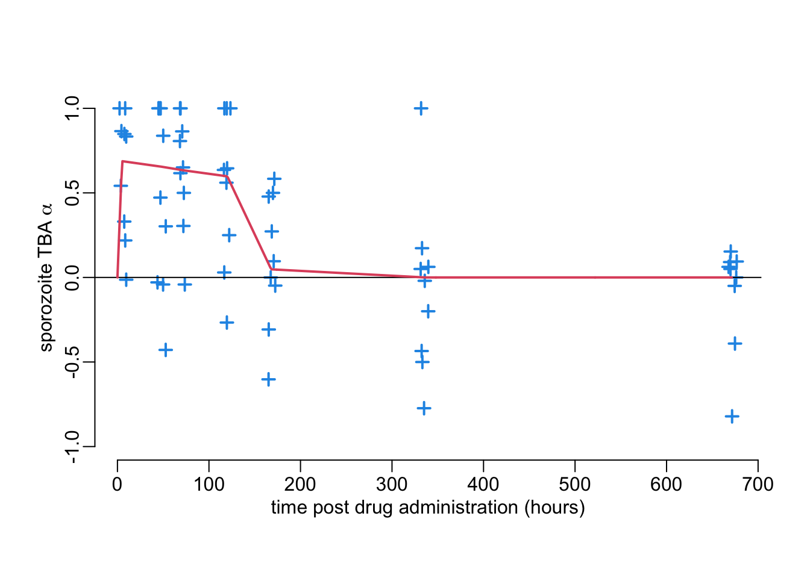
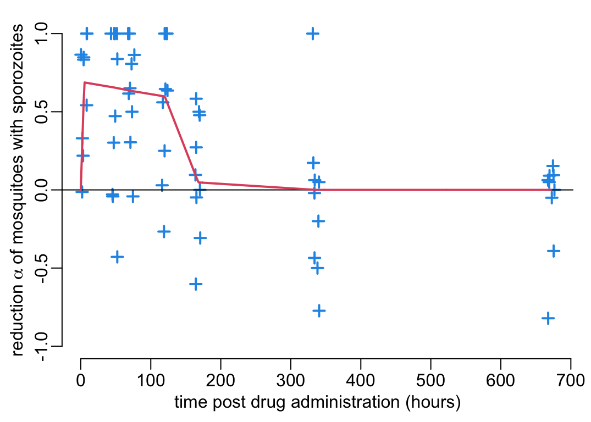
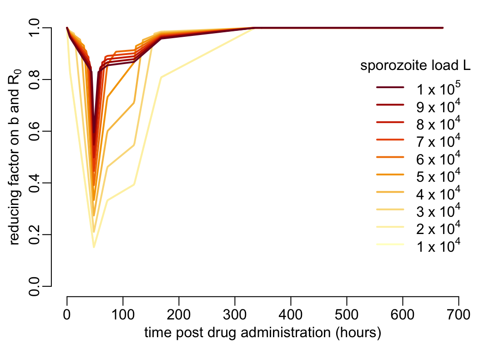

path2data <- paste0(Sys.getenv("HOME"), "/Library/CloudStorage/",
"OneDrive-OxfordUniversityClinicalResearchUnit/",
"GitHub/choisy/malarone/")Some epidemiological effects of malarone
In this analysis we use the formalism of Smith and McKenzie (2004).
1 Parameters
The path to the data:
Whether or not to force the effects to be equal to 0 at \(t = 28\) days (in practice it does not change things much anyway):
t28_0 <- TRUE2 Packages
Required packages:
required_packages <- c("readr", "readxl", "dplyr", "purrr", "stringr")Installing those that are not installed yet:
to_inst <- required_packages[! required_packages %in% installed.packages()[,"Package"]]
if (length(to_inst)) install.packages(to_inst)Loading some for interactive use:
library(dplyr)
library(purrr)3 Functions
Tuning some base functions:
lwd_val <- 2
seq2 <- function(...) seq(..., le = 512)
abline2 <- function(...) abline(..., col = "grey")
lines2 <- function(...) lines(..., col = 2, lwd = lwd_val)
segments2 <- function(...) segments(..., col = 4, lwd = lwd_val)
plot2 <- function(...) plot(..., col = 4, pch = 3, lwd = lwd_val)
plotl <- function(...) plot(..., type = "l", col = 2, lwd = lwd_val)
arrows2 <- function(...) arrows(..., col = 3, length = .15, lwd = lwd_val)
readRDS2 <- function(f, ...) tibble::as_tibble(readRDS(paste0(path2data, f), ...))A function that performs numerical integration using the trapezoid method:
trapezoid <- function(f, lower, upper, nb = 1e4) {
step <- (upper - lower) / nb
y <- f(seq(lower, upper, le = nb + 1))
step * (y[1] + 2 * sum(y[-1])) / 2
}4 Vectorial capacity
From Smith and McKenzie (2004), the individual vectorial capacity (i.e. the expected number of infectious bites from a single vector after feeding on an infectious host):
\[ C = c \cdot P_e \cdot S \]
where \(c\) is the transmission efficiency from human to mosquito (i.e. probability of becoming infected after feeding on an infectious human), \(P_e\) is the probability of becoming infectious for an infected mosquito:
\[ P_e = e^{-gn} \] (with \(g\) the mosquito death rate and \(n\) the EIP), and \(S\) is the stability index, i.e. the total number of bites per mosquito during its lifetime:
\[ S = \frac{a}{g} \] with \(a\) the mosquito biting rate, i.e. the number of bites per mosquito. Gathering everything gives:
\[ C = c \cdot e^{-gn}\frac{a}{g} \tag{1}\]
5 Experimental results
The experimental results suggest that malarone
- decreases by the multiplicative factor \(1 - \alpha\) (\(0 \leq \alpha \leq 1\)) the number of mosquitoes with sporozoites (with \(\alpha\) shown on the \(y\) axis of Figure 3B);
- decreases by the multiplicative factor \(1 - \beta\) (\(0 \leq \beta \leq 1\)) the number of sporozoites in mosquitoes still harboring sporozoites (with \(\beta\) shown on the \(y\) axis of Figure 4B);
- decreases by the multiplicative factor \(1 - \gamma\) (\(0 \leq \gamma \leq 1\)) the size of oocysts (with \(\gamma\) shown on the \(y\) axis of Figure 5A), which can be translated into an increase of the EIP \(n\) (see for example Figure 5B from Werling et al. (2019);
- has no effect on the mosquito biting rate \(a\) (Figure 7A);
- has no effect on the mosquito death rate \(g\) (Figure 7B).
Let’s see below how we can integrate the first 3 effects into Equation 1.
5.1 Transmission-blocking activity on sporozoites
A function that reads the sporozoites data for the treatment group:
make_reading_exp_data <- function() {
hours <- c(0, 5, 48, 72)
days <- c(5, 7, 14, 28)
hash <- c(setNames(hours, paste0("H", hours)),
setNames(24 * days, paste0("D", days)))
function(file) {
file |>
readRDS2() |>
filter(treatment == "AL+AP") |>
mutate(time_hours = hash[stringr::str_remove(time_points, "0")],
across(Inhibition, ~ .x / 100))
}
}
reading_exp_data <- make_reading_exp_data()Let’s pull out the data from Figure 3B:
sporozoitsTBA <- reading_exp_data("percentage_inhibition9.rds")A function that converts a data frame on the effet of malarone on sporozoites into a function:
data2function <- function(data, correction = t28_0) {
apply_correction <- function(x) {
if (correction) return(mutate(x, median_val = c(head(median_val, -1), 0)))
x
}
data |>
group_by(time_hours) |>
summarise(median_val = max(0, median(Inhibition))) |>
bind_rows(tibble(time_hours = 0, median_val = 0)) |>
arrange(time_hours) |>
apply_correction() |>
with(function(x, ...) approx(time_hours, median_val, x, ...)$y)
}When correction = TRUE the value at \(t = 28\) days is forced to be equal to 0. Let’s now create a function alpha() on percentage \(\alpha(t)\) inhibition on sporozoite infection rate as a function of time \(t\) post drug administration:
alpha <- data2function(sporozoitsTBA)A function that plots the experimental data on the effect of malarone on sporozoites:
plot_effect_sporozoites <- function(data, ...) {
with(data, plot2(jitter(time_hours), Inhibition,
xlab = "time post drug administration (hours)", ...))
abline(h = 0)
}This is what this function looks like:
plot_effect_sporozoites(sporozoitsTBA, ylim = c(-1, 1),
ylab = expression(paste("sporozoite TBA ", alpha)))
xs <- seq2(0, 700)
lines2(xs, alpha(xs))
The effect on \(C\) of the first phenomenon can simply be modelled as a multiplicative factor \(\alpha\): \[ C' = (1 - \alpha) C \]
5.2 Transmission-reducing activity on sporozoites
Let’s pull out the data from Figure 4B:
sporozoitsTRA <- reading_exp_data("percentage_inhibition13.rds")Let’s now create a function beta() on percentage \(\beta(t)\) inhibition on sporozoite intensity as a function of time \(t\) post drug administration:
beta <- data2function(sporozoitsTRA)This is what this function looks like:
plot_effect_sporozoites(sporozoitsTRA, ylim = c(-.15, .15),
ylab = expression(paste("sporozoite TRA ", beta)))
lines2(xs, beta(xs))
In order to convert this sporozoite TRA into a vectorial capacity reduction, we need a function \(f\) that converts a sporozoite load into an infection probability. Figure 2B from Aleshnick et al. (2020) provides such a function that we transpose in the f() function below:
make_f <- function(x1, x2, y1, y2) {
function(x) {
purrr::map_dbl(x, function(x) {
if (x < x1) return(x * y1 / x1)
y1 + (x - x1) * (y2 - y1) / (x2 - x1)
})
}
}
f <- make_f(x1 = 21111, x2 = 1e5, y1 = .285, y2 = .344)And this is what it looks like:
xs2 <- seq2(0, 1e5)
plotl(xs2, f(xs2),
xlab = "salivary gland sporozoite load", ylab = "infection probability")In order to model the effect on \(C\) of the second phenomenon we need a function \(f\) that relates the Plasmodium load to mosquito-to-human infectiousness:
\[ C' = \frac{f((1 - \beta) L)}{f(L)}C \]
where \(L\) is the sporozoite load in mosquitoes feeding on untreated people.
5.3 Increase of the EIP
Let’s pull out the data from Figure 5A:
oocysts_size <- reading_exp_data("percentage_inhibition_size2.rds")Let’s now create a function gamma() on percentage \(\gamma(t)\) decrease sporozoite intensity as a function of time \(t\) post drug administration:
gamma <- data2function(oocysts_size)This is what this function looks like:
plot_effect_sporozoites(oocysts_size, ylim = c(-.65, .65),
ylab = expression(
paste("sporozoite size reduction factor ", gamma)))
lines2(xs, gamma(xs))Next, we need to convert a reduction in oocysts size at 7 dpi into an extension of the EIP. Figure 5B from Werling et al. (2019) suggests a linear relationship between the development time and oocysts size, which means that the effect on \(C\) of the third phenomenon can simply be modelled as
\[ C' = e^{(1 - 1/\gamma)gn} C \]
5.4 Combining the 3 effects
Combining the 3 above effects for a mosquito that feeds on a human host that started malarone \(t\) units earlier, we have:
\[ C' = (1 - \alpha(t)) \frac{f((1 - \beta(t)) L)}{f(L)} e^{(1 - 1/\gamma(t))gn} C \]
The corresponding R code is:
C_effect_at_t <- function(t, L, g, n) {
(1 - alpha(t)) * f((1 - beta(t)) * L) * exp((1 - 1 / gamma(t)) * g * n) / f(L)
}The expected effect of malarone on a mosquito that feeds on a human who is infected and has taken a treatment, not knowing when, would read:
\[ C' = \frac{C}{D}\int_0^D(1 - \alpha(t)) \frac{f((1 - \beta(t)) L)}{f(L)} e^{(1 - 1/\gamma(t))gn}dt \]
where \(D = 1/r\) if the mean duration of infection in the human host (where \(r\) is the human recovery rate in Smith and McKenzie (2004). The corresponding R code is:
C_effect_on_treated <- function(D, L, g, n, nb = 1e6) {
trapezoid(function(x) C_effect_at_t(x, L, g, n), 0, D, nb) / D
}Finally, if \(P\) is the prevalence in the human population and \(\tau\) is the proportion of infected people that are treated, the mean effect of malarone on the individual vectorial capacity is:
\[ C' = \left(\frac{\tau P}{D}\int_0^D(1 - \alpha(t)) \frac{f((1 - \beta(t)) L)}{f(L)} e^{(1 - 1/\gamma(t))gn}dt + 1 - \tau P\right)C \] or, equivalently:
\[ C' = \left(1 - \tau P\cdot\left(1 - \frac{1}{D}\int_0^D(1 - \alpha(t)) \frac{f((1 - \beta(t)) L)}{f(L)} e^{(1 - 1/\gamma(t))gn}dt\right)\right)C \]
and the corresponding R code is:
mean_C_effect <- function(D, L, g, n, P, tau) {
1 - tau * P * (1 - C_effect_on_treated(D, L, g, n))
}6 Numerical analysis
In the numerical exploration below we assume a mosquito life expectancy \(1/g\) of 14 days and an EIP \(n\) of 7 days. The malarone reducing effect on the individual vectorial capacity of a mosquito feeding on a person 100 hours after drug administration:
(C_effect_at_t100 <- C_effect_at_t(t = 100, L = 6e4, g = 1 / (14 * 24), n = 7 * 24))[1] 0.1759355The malarone reducing effect on the individual vectorial capacity of a mosquito as a function of the time post drug administration:
xs3 <- seq(0, 24 * 28, le = 2^10)
plotl(xs3, C_effect_at_t(t = xs3, L = 6e4, g = 1 / (14 * 24), n = 7 * 24),
xlab = "time post drug administration (hours)",
ylab = "individual vectorial capacity reduction effect")
abline(v = 100, col = 4)
abline(h = C_effect_at_t100, col = 4)
The expected malarone reducing effect on the individual vectorial capacity of a mosquito feeding on a person who took drug:
C_effect_on_treated(D = 14 * 24, L = 6e4, g = 1 / (14 * 24), n = 7 * 24)[1] 0.1121347The expected malarone reducing effect on the individual vectorial capacity of a mosquito feeding in a population with malaria prevalence of 10%, 90% of which are taking drug:
mean_C_effect(D = 14 * 24, L = 6e4, g = 1 / (14 * 24), n = 7 * 24, P = .1, tau = .9)[1] 0.9200921Takes about 30”:
tauP <- seq2(0, 1)
mCeff <- map_dbl(tauP, mean_C_effect,
D = 14 * 24, L = 6e4, g = 1 / (14 * 24), n = 7 * 24, tau = 1)Which gives:
plotl(tauP, mCeff, ylim = 0:1,
xlab = "prevalence of people who took the drug in the past 14 days",
ylab = "expected vectorial capacity reducing effect")
7 Epidemiology
Now that we have characterized the effect of malarone on the vectorial capacity in a context of a given malaria prevalence in the human population, let’s derive the epidemiological consequences. In order to better characterize the epidemiological consequences of the effect of malarone in mosquitoes, we will here neglect the effect of malarone in humans (i.e. malarone is not affecting the human recovery rate \(r = 1/D\)). Following the formalism of Smith and McKenzie (2004), the basic reproduction ratio is the expected number of infected humans per infected human or, equivalently, the expected number of infected mosquitoes per infected mosquito and can be expressed as:
\[ R_0 = C \cdot b \cdot D \cdot a \cdot m \]
where \(C\) is the individual vectorial capacity we have been considering so far, \(b\) is the transmission efficiency from mosquito to human, \(D = 1 / r\) is the above mentioned mean duration of human infection, and \(m\) is the ratio of mosquitoes to humans. This means that the reducing effect on the vectorial capacity \(C\) that we characterized above can be transposed to a reducing effect on the basic reproduction ratio \(R_0\):
\[ R_0'(P) = \rho(P) R_0 \tag{2}\]
with
\[ \rho(P) = 1 - \tau P\cdot\left(1 - \frac{1}{D}\int_0^D(1 - \alpha(t)) \frac{f((1 - \beta(t)) L)}{f(L)} e^{(1 - 1/\gamma(t))gn}dt\right) \] being the reduction factor on vectorial capacity derived above. In return, the proportion \(P\) (\(\bar{X}\) in Smith and McKenzie (2004) of infected humans at equilibrium can be expressed as a function of \(R_0\):
\[ P(R_0') = \frac{R_0' - 1}{R_0' + c S} \tag{3}\]
Let’s now look at the epidemiological equilibrium from Equation 2 and Equation 3. Here is a function that creates the \(\rho(P)\) function for given values of the parameters \(D = 1/r\), \(L\), \(g\), \(n\) and \(\tau\):
make_rho <- function(D, L, g, n, tau) {
P <- seq2(0, 1)
mCeff <- map_dbl(P, mean_C_effect, D = D, L = L, g = g, n = n, tau = tau)
function(x, ...) approx(P, mCeff, x, ...)$y
}Let’s make one example (takes about 30”):
rho1 <- make_rho(D = 14 * 24, L = 6e4, g = 1 / (14 * 24), n = 7 * 24, tau = .9)Once we have this rho1() function, we can use it in a recursion loop together with the inverse of Equation 3:
recursion <- function(R0o, cS, n, rho) {
R0 <- P <- numeric(n)
R0[1] <- R0o
for (i in 1:(n - 1)) {
P[i] <- (R0[i] - 1) / (R0[i] + cS)
R0[i + 1] <- R0o * rho(P[i])
}
P[n] <- (R0[n] - 1) / (R0[n] + cS)
output <- data.frame(R0 = R0, P = P)
attr(output, "parms") <- list(R0o = R0o, cS = cS, n = n, rho = rho)
output
}where R0o is the value of \(R_0\) in absence of treatment in the population and n is the number of iterations of the recursion loop.
dynamics1 <- recursion(R0o = 15, cS = 40, n = 1e3, rho = rho1)The following function plots the recursion loop:
plot_recursion <- function(x, max_prev = 1) {
prev_val <- seq2(0, max_prev)
parms <- attr(x, "parms")
with(parms, {
plotl(prev_val, rho(prev_val) * R0o, ylim = c(0, R0o),
xlab = "prevalence", ylab = "basic reproduction ratio R0")
lines2(prev_val, (1 + cS * prev_val) / (1 - prev_val))
})
nbrows <- nrow(x)
abline2(v = x$P[1])
abline2(v = x$P[nbrows])
abline2(h = x$R0[nbrows])
with(x, {
segments2(-1, R0[1], P[1], R0[1])
for (i in 1:(nbrows - 1)) {
segments2(P[i], R0[i], P[i], R0[i + 1])
segments2(P[i], R0[i + 1], P[i + 1], R0[i + 1])
}
})
with(parms, {
arrows2(0, R0o, 0, x$R0[nbrows])
arrows2(x$P[1], 0, x$P[nbrows], 0)
})
}Which gives:
plot_recursion(dynamics1)
References
Aleshnick, M., V. V. Ganusov, G. Nasir, G. Yenokyan, and P. Sinnis. 2020. Experimental determination of the force of malaria infection reveals a non-linear relationship to mosquito sporozoite loads. PLoS Pathog 16:e1008181.
Smith, D. L., and E. F. McKenzie. 2004. Statics and dynamics of malaria infection in Anopheles mosquitoes. Malar J 3:13.
Werling, K., W. R. Shaw, M. A. Itoe, K. A. Westervelt, P. Marcenac, D. G. Paton, D. Peng, et al. 2019. Steroid hormone function controls non-competitive Plasmodium development in Anopheles. Cell 177:315–325.e14.